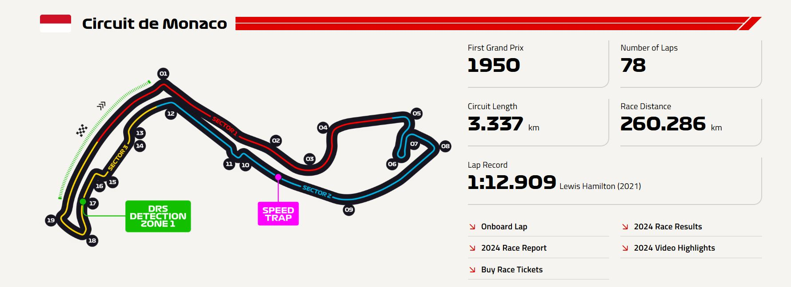

| Özellik | Değer |
|---|---|
| Pist uzunluğu | 3.337 km (2.074 mil) |
| Tur sayısı | 78 tur |
| Toplam yarış mesafesi | 260.286 km (161.734 mil) |
| Viraj sayısı | 19 (11 sağ, 8 sol) |
| DRS bölgeleri | 1 (tünelden çıkıp ana düzlükte) |
| En hızlı tur | 1:12.909 – Lewis Hamilton (2021) |
| En düşük ortalama hız | Yaklaşık 160-170 km/s |
| En düşük maksimum hız | ~290 km/s (diğer pistlere kıyasla düşük) |